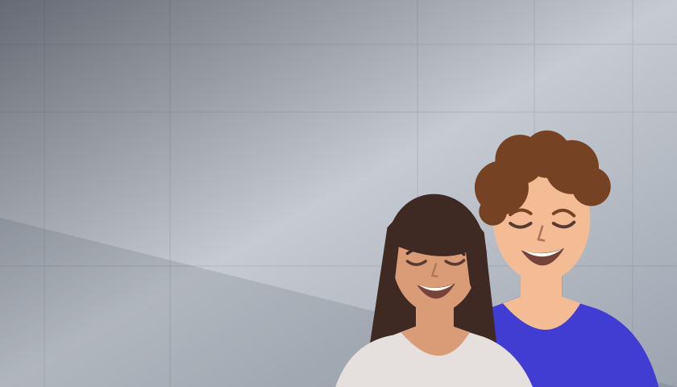

آزمایشی
یک جلسه برای آشنایی با محیط و مربی
انتخاب ↗
قدرت خودت را پیدا کن. هر تمرین، هر پرش و هر قدم را کنار یک تیم تجربه کن.
رزرو تمرین آزمایشیاز روز اول با یک هدف روشن شروع کن. بعد از هر جلسه مشخص کن کدام حرکت بهتر شده و قرار است دفعهٔ بعد روی چه چیزی کار کنی.
لباس راحت، کفش مناسب سالن و آب.
در درخواست خود رشتههایی را که میخواهی تجربه کنی بنویس.
 انتخاب این طرح
انتخاب این طرح